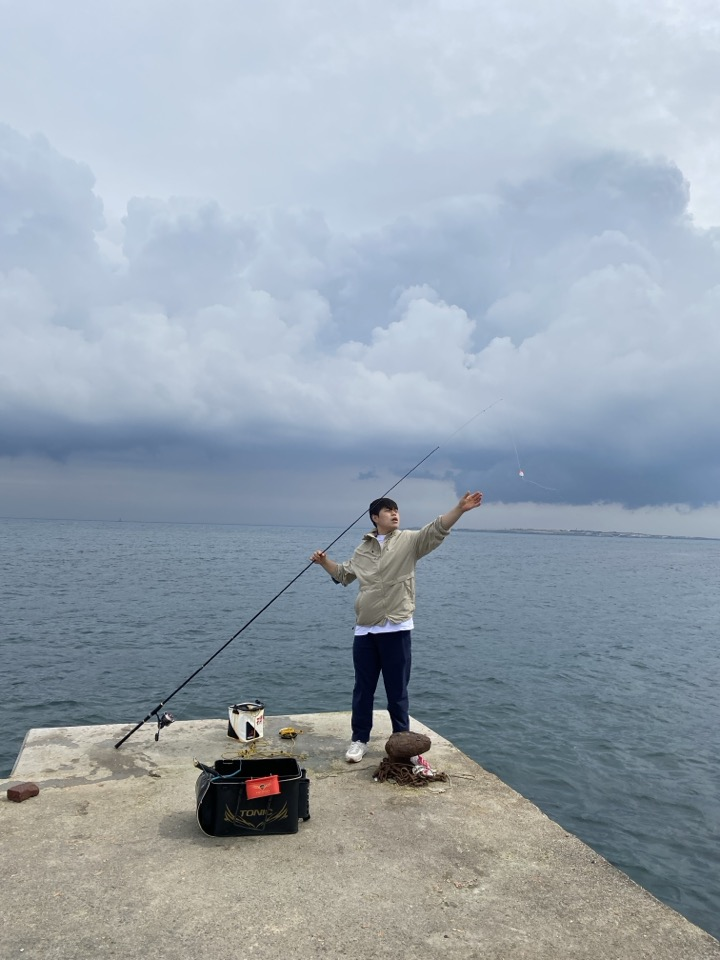
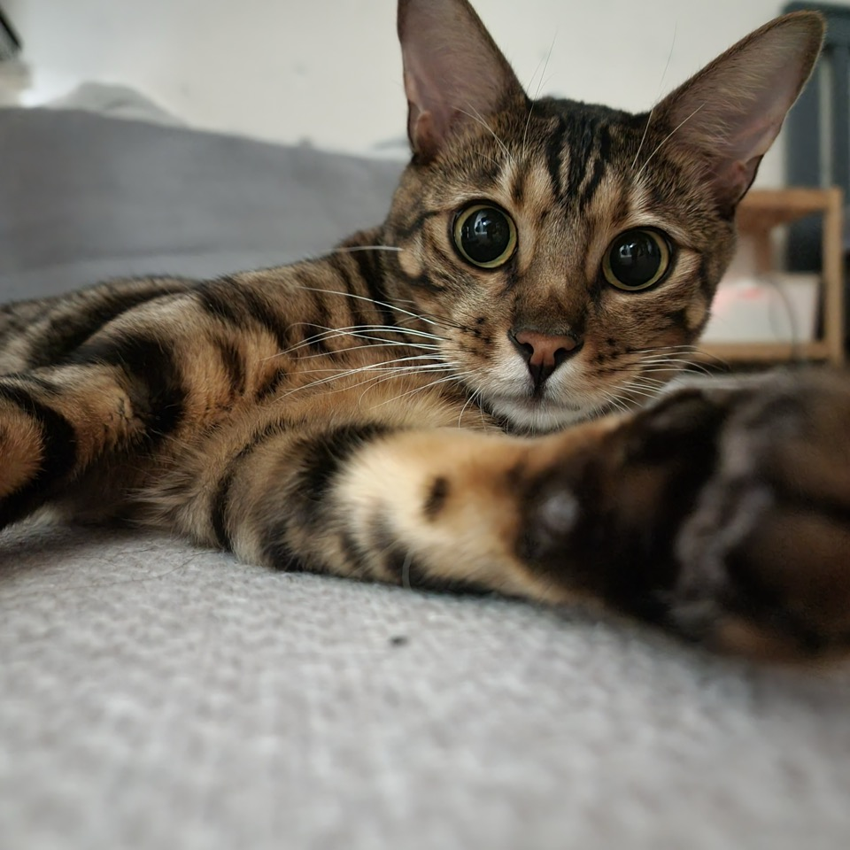
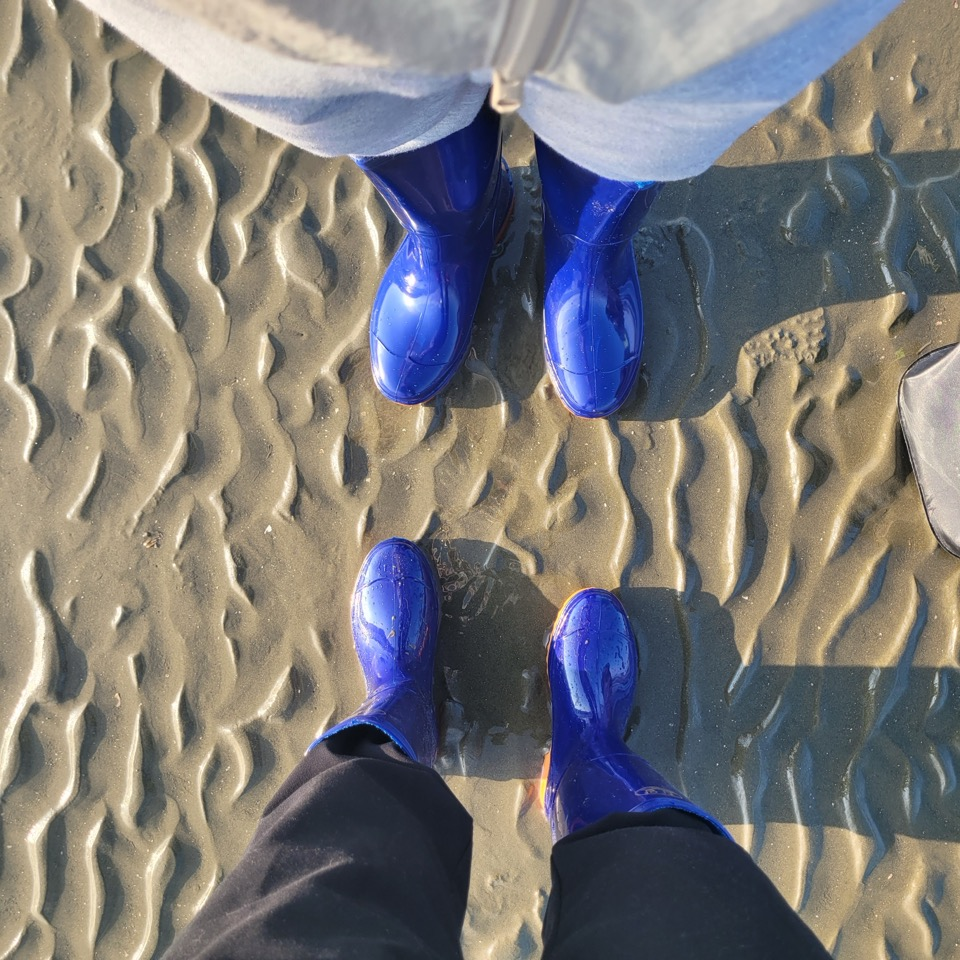

안녕하세요 저는 히포에요 🦛
전혀다른 삶을 살다가, 일을 하는 과정에서 조금 개발에 스며들어 여기까지 왔어요.
사람들과 어울리고 대화하는 걸 좋아해서 개발 이야기가 아니여도 무엇이든 마음이 맞는 주제가 있다면 이야기하는 걸 좋아합니다.
요즘은 저의 다른 모습을 찾아보기 위해 많은 시도를 해보고 있어요.
항상 거창하지는 않지만 자신을 변화 시킬 수 있는 사소한 것을 생각해보고 조금씩 바꿔나가면서 며칠 혹은 몇달 후 바뀐 모습을 느끼는 순간의 희열을 느껴요.
(요즘 제일 뿌듯한 일은 아침에 침대 이불을 깔끔하게 정리하는 습관이 생겼다는 점)
그리고 요즘엔 극단의 P이기 때문에 무계획 안의 질서??를 선호하는 편이지만, 5%의 J를 첨가하기 위해서 아침마다 계획 세우는 척도 해보며
J되기 프로젝트도 하고 있습니다.
내년엔 얼마다 더 바뀐 모습으로 저를 마주할지 기대가 되는 하루입니다.
북부에서 처들어 오는 무서운 녀석들을 막기 위해서 북방에서 고분분투하는 주인공의 이야기를 그렸다고 할 수 있습니다.
등 뒤에서 무서운 위험이 다가오는 줄도 모른 채, 권력 다툼을 하면 서로의 이익만을 챙기며 싸우지만
정작 큰 위험이 다가왔을 때 함께 싸우며 무서운 녀석들을 무찔러 내는 감명 깊은 드라마 입니다.
🚨 주의 🚨
아직 왕좌의 게임을 보지 않았다면? 절대 보지 마세요.
한 편만 더? 하다가 잠 못자서 무단 결석으로 퇴소 당할 수 있습니다.

한 강아지와 남매의 따뜻하지만 슬픈 우정 이야기...
원래 영화, 드라마 등을 보면서 울지 않지만 저를 처음으로 울린 영화였습니다.
강아지와 남매 간의 조건 없는 아름다운 사랑이 전해주는 가슴 따듯해지는 영화이기 때문에
요즘 내가 사랑이 부족하다고 느낀다면 이 영화를 한번 보는 것을 추천드립니다.